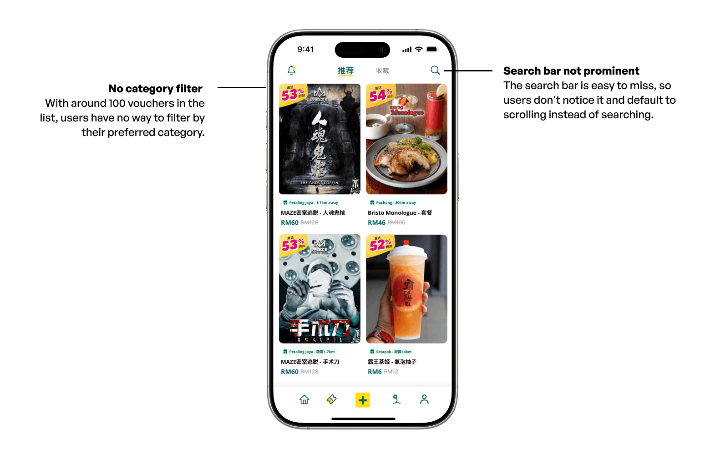
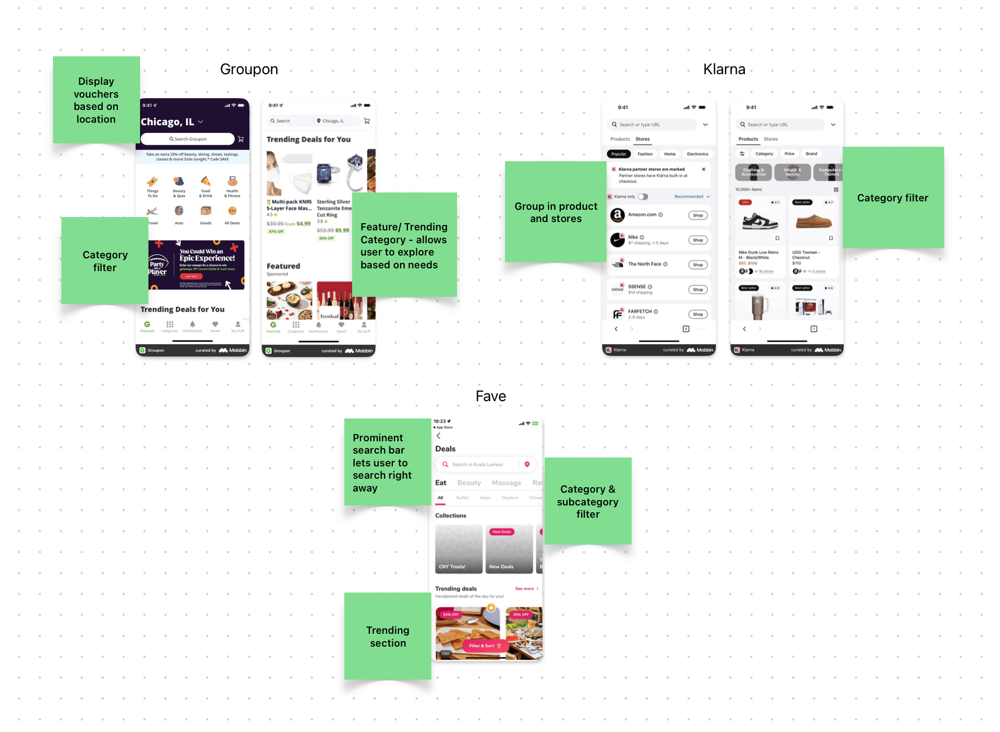
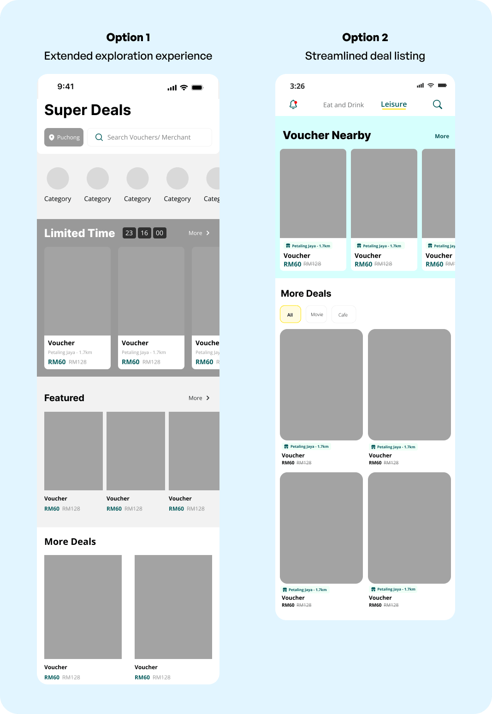
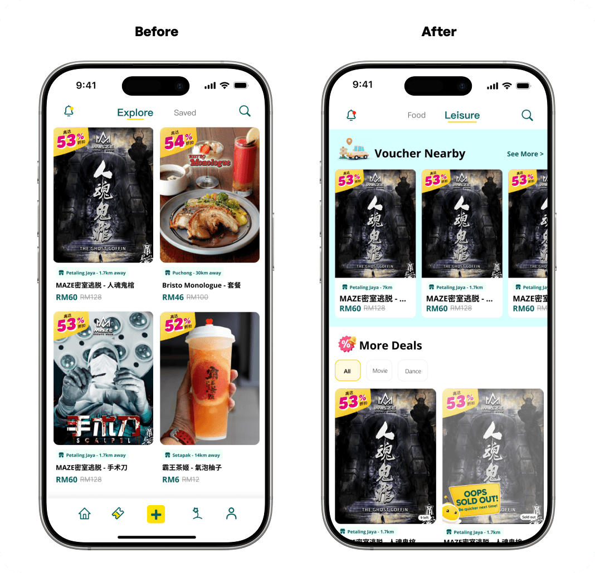
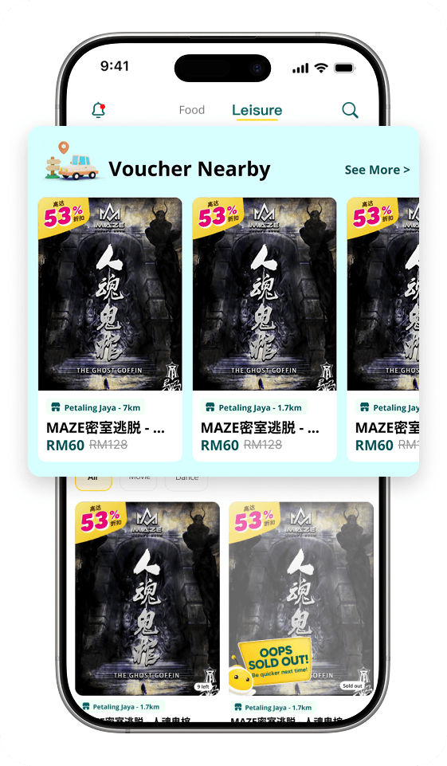
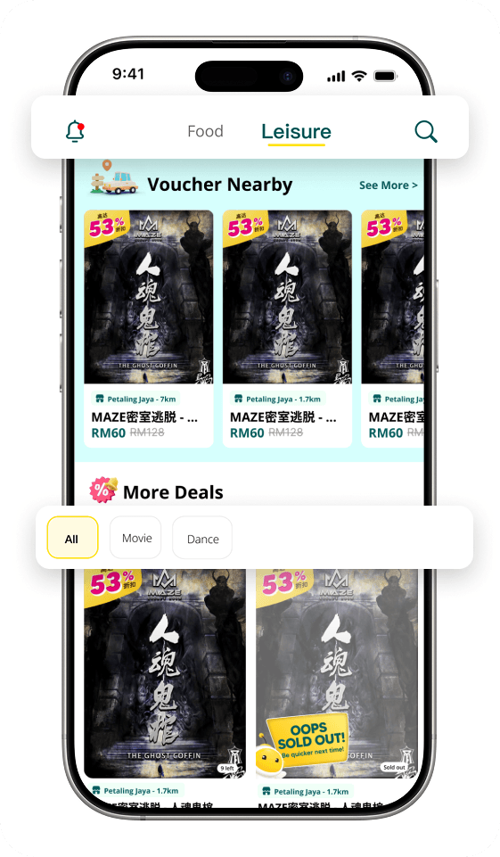
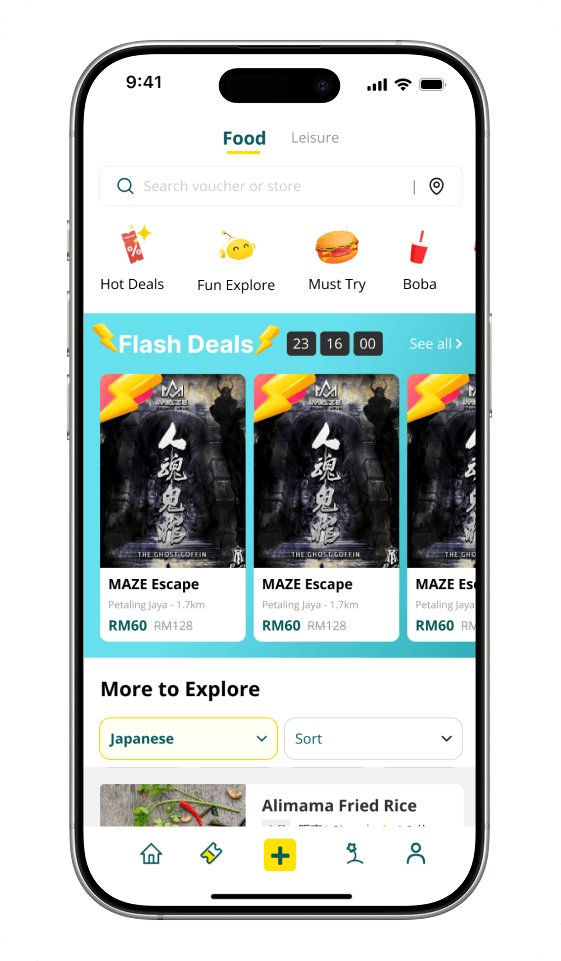

Overview專案概述
Funhub is Malaysia’s first Entertainment & Lifestyle Social Circle App, offering users a variety of vouchers and deals for entertainment, food, travel, and other services. As the platform expanded, so did its selection of available vouchers.
Funhub 是馬來西亞第一個「娛樂與生活社交圈」App，提供使用者娛樂、美食、旅遊等各類服務的票券與優惠。隨著平台規模擴大，可用的票券選擇也隨之增加。
So... what's the issue?所以，問題出在哪裡?
It started with a UI audit從一次 UI 稽核開始
I ran a UI/UX audit on the deals page and found that as the number of vouchers grew, the page had become longer. I noticed two major problems: no category filter and a search bar that was easy to miss.
我們針對優惠頁面做了一次 UI/UX 稽核。隨著票券越加越多，頁面變得雜亂。使用者得滑過大量不相關的優惠，很多人在找到想要的東西之前就放棄了。

Then merchants started complaining接著，商家開始反映問題
Around the same time, the Business Development team shared feedback from merchants.
大約在同一時間，業務開發（BD）團隊分享了他們從商家那裡收到的回饋。
I don't think I gain any exposure at all, the voucher purchased rate is so low.
「除非使用者本來就認識我的品牌，不然根本沒人看得到我的票券。曝光度都被大商家拿走了。」
Smaller brands weren't getting seen. Users who didn't already recognize the name rarely found their vouchers, so their sales lagged behind bigger merchants.
小眾商家的曝光度不足。如果使用者原本就不認識這個品牌，通常不會找到他們的票券，銷售表現也因此落後知名品牌。
So how do we fix it?那，要怎麼解?
I started by looking at how other deal platforms organise their vouchers. Most of them lean on categories and location — which told me we weren’t solving anything unusual, we just hadn’t done it yet.
我先看了其他優惠平台如何整理票券。多數平台都靠分類與地點來組織內容——這讓我知道，我們要解的並不是什麼特別的問題，只是還沒做而已。

Design Goals目標
Easier to Explore更快找到值得點的優惠
Make the page easier to browse, so users can look around and find vouchers they want without getting stuck.
重新調整版面，讓瀏覽不再像是在雜訊裡打撈——從打開頁面到找到真正想要的優惠，中間的步驟越少越好。
A Chance to Be Seen一個被看見的機會
Give lesser-known merchants a spot on the page where users can notice them.
讓不知名的商家在頁面上也有一席之地，讓使用者有機會真正注意到他們;同時給使用者足夠的理由，去信任一個從沒聽過的名字。
Drawing out the ideas兩個想法，一個限制
I came out with two directions: an extended exploration experience built around the user's location, and a simpler one — category filters and a nearby section, this is also a fast deliver option as it required minimal UI changes.
我從線框稿開始，先把想法都攛開，最後收斂成兩個方向，往兩邊拉。

The first one was the ideal solution, but there's one problem — the merchant base had grown, but not enough to fill a page like that. In most areas it would have looked empty. And in consideration of the short development time, the team held it back and shipped the simpler one first.
我想做的是第一個。問題不在想法，而在時機——商家數量確實成長了，但還不足以撐起這樣的頁面，在大多數地區看起來會太空。加上開發時間也不多。
Where it landed最後長這樣


Nearby Deals Section附近優惠區塊
Shows what's around the user when they open the page without searching for it. It also gives local and lesser-known merchants somewhere to be found.
新增「附近優惠」區塊，提升在地與小眾商家的曝光度。
Category Tab & Filter分類系統
Users can filter vouchers using category tabs at the top of the page, making it easier to find specific types of deals.
使用者可透過頁面頂端的分類標籤篩選票券，更輕鬆找到特定類型的優惠。

So, did it work?那麼，有效嗎?
When this shipped we had no analytics implemented yet, so the proof came from people instead.
這個版本上線時，優惠頁面還沒有任何數據追蹤。沒有儀表板，也沒有數字。所以證據是從人那裡來的。
Merchants noticed first商家先發現了
A few weeks after launch, BD came back with a positive results - merchants were seeing a small lift in visits.
上線幾週後，BD 帶回來的話和第一次完全相反。小眾商家的造訪數有小幅上升，曝光度的抱怨也不再出現。
We starting to see user from Funhub visiting!
「現在真的有人會點進來了，連不認識我們的人也會。」
So did the people around me身邊的人也有感
A few friends of mine use the app had given some positive feedback too - it was easier to see what was nearby, and easier to explore something worth using.
我有幾個朋友也在用這個 App，他們沒等我問就主動提起了改變——附近有什麼變得好看多了，也更容易找到真的用得到的優惠。沒參與專案的同事也不需要人引導，就能自己篩選分類、找到票券。
What comes next接下來
Once there are enough merchants to fill it, it does things the current version can’t:
我們暫時收起來的那個構想，仍然是我認為這個頁面該走的方向。等商家數量足夠支撐它時，它能做到現在做不到的事:
- More categories to browse, and gives user ideas to explore.
- 更多分類可以逛，而且每個分類背後都有足夠的商家，值得點開。
- Users can change location instead of being stuck with wherever they happen to be.
- 使用者可以自己切換地點，而不是只能看目前位置附近。
- More ways for merchants to be seen, including featured spots and paid placement.
- 商家有更多被看見的方式，包含精選版位與付費曝光。
- It fits what the app is actually for — discovering what's worth eating, drinking and doing.
- 更貼近這個 App 真正在做的事——探索吃喝玩樂。

And once we had data等有數據之後
Analytics were on the roadmap, just not in place yet. Once they were, these are the three things I’d want to look at:
數據追蹤已經在規劃中，只是還沒上線。等到有數據之後，我最想看的是這三件事:
User Engagement使用者互動度
Time on page, filter usage, and how many users browse merchants.
使用者在優惠頁面停留的時間、篩選器的使用頻率，以及瀏覽商家的人數——這些足以判斷人們是在探索，還是依舊直接離開。
Merchant Reach轉換率
How many different merchants get viewed, and how much of that goes to the lesser-known ones.
有多少使用者在瀏覽優惠頁面後真的下單。這是最接近直接答案的指標，能看出新版面到底有沒有用。
Discovery to Voucher票券兌換率
How many users who land on the page reach a voucher at all. If the layout works, more people should get that far.
買了的票券有多少真的被使用。一張買了卻沒兌換的票券，代表我們把錯的東西賣給了錯的人。